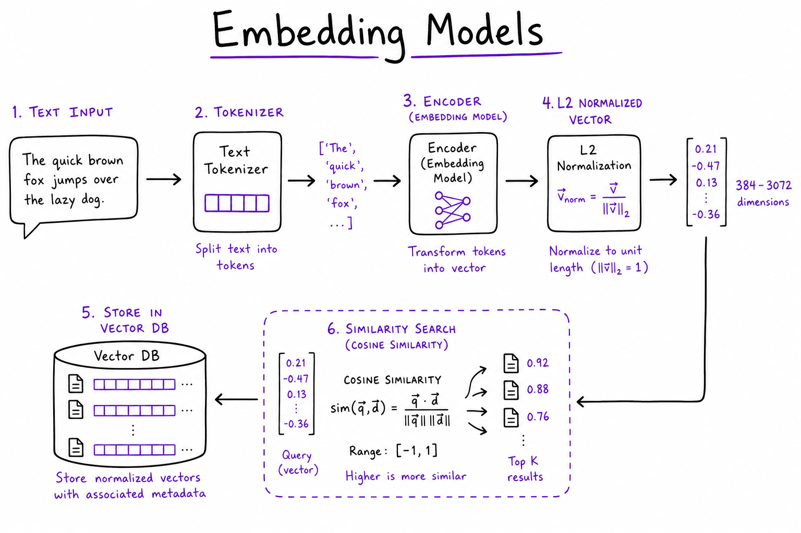
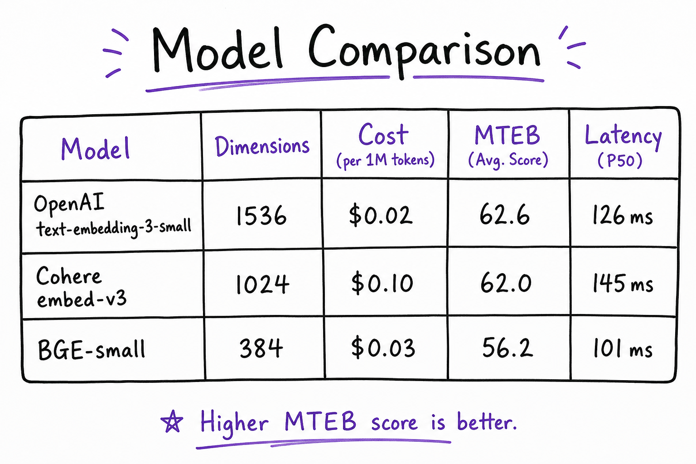
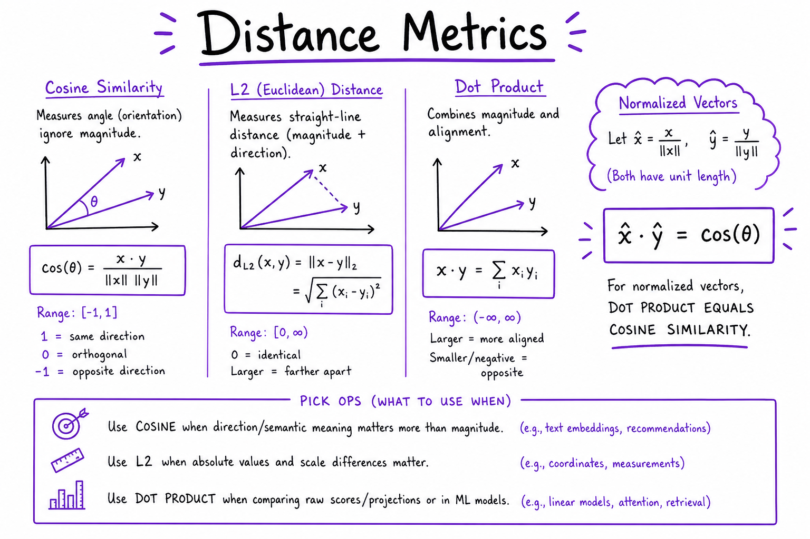

Embedding Models // AI Tech
Choose and deploy text embedding models for RAG: OpenAI text-embedding-3, Cohere embed-v3, open-source BGE/E5, Matryoshka dimension truncation, cosine vs dot-product metrics, and golden-set eval before you commit to an index in your vector database.

Embedding pipeline: text → tokenizer → bi-encoder transformer → L2-normalized vector (384–3072 dim) → cosine similarity in vector DB. Same model at ingest and query; version tag in index namespace.
01 — What & Why
Embedding models convert text into dense vectors so semantic similarity becomes geometry: nearby vectors = related meaning. In RAG end-to-end pipelines, the embedding model sets the recall ceiling before chunking tuning, hybrid search, or rerankers can help. Wrong model, wrong metric, or mismatched ingest/query models waste all downstream work.
Functional requirements
- Embed document chunks at ingest with stable IDs and model version metadata
- Embed queries at search time with the same model (or asymmetric pair for Cohere)
- Support batch ingest (64–256 texts/GPU batch) and low-latency single-query embed
- Truncate dimensions (Matryoshka) when storage cost matters
- Version and migrate: re-embed entire corpus on model bump
Non-functional requirements
- Quality: recall@5 ≥ target on domain golden set (not MTEB alone)
- Latency: query embed < 30 ms p99 (API or warm GPU worker)
- Cost: $/1M tokens for hosted; GPU $/hour for self-host at scale
- Consistency: L2 normalization pipeline matches vector DB distance ops
- Compliance: air-gap option (BGE/E5 on TEI) when data cannot leave VPC
Prerequisite: Embeddings & Semantic Search fundamentals. Vectors land in Vector Databases — pick model first, index second.
01a — Core Concepts
| Term | Definition | Gotcha |
|---|---|---|
| Bi-encoder | Single forward pass embeds query and doc independently | Fast ANN retrieval; not a reranker |
| Cross-encoder | Joint model on [query, passage] pair | Accurate but O(pairs) — see Rerankers |
| MTEB | Massive Text Embedding Benchmark leaderboard | Your legal/medical domain may differ wildly |
| Matryoshka | Embeddings trained so first k dims stay useful when truncated | OpenAI v3 dimensions=512 param |
| L2 normalization | Scale vector to unit length | Dot product = cosine when normalized |
| Asymmetric embed | Different input_type for query vs document (Cohere) | Must set correctly at ingest vs query |
| Context length | Max tokens per embed call (512–8192) | Chunk long docs first; never embed whole PDF |
| Model version | Tag in vector metadata (e.g. embed_v3_small) | Mixing versions in one index breaks search |
01b — API / Interface Surface
# OpenAI — default SaaS choice
from openai import OpenAI
client = OpenAI()
resp = client.embeddings.create(
model="text-embedding-3-small",
input=["Refund policy within 30 days", "How do I return an item?"],
dimensions=512, # Matryoshka truncate from 1536
)
vec = resp.data[0].embedding # list[float], 512 dims
# Cohere — asymmetric query/doc types
import cohere
co = cohere.Client()
doc_vecs = co.embed(
texts=chunks, model="embed-english-v3.0", input_type="search_document"
).embeddings
query_vec = co.embed(
texts=[question], model="embed-english-v3.0", input_type="search_query"
).embeddings[0]
# Local — sentence-transformers (BGE)
from sentence_transformers import SentenceTransformer
model = SentenceTransformer("BAAI/bge-small-en-v1.5")
vecs = model.encode(texts, normalize_embeddings=True, batch_size=64)
| API | Key params | Output |
|---|---|---|
OpenAI embeddings.create | model, input, dimensions | data[].embedding float[] |
Cohere embed | input_type, model | embeddings float[][] |
| sentence-transformers | normalize_embeddings=True | numpy / torch tensor |
| TEI (HuggingFace) | HTTP /embed batch | Production GPU batching for BGE/E5 |
02 — When to Use / When NOT
| Model / approach | Use when | Skip when |
|---|---|---|
text-embedding-3-small | Default SaaS RAG; best $/quality hosted | Air-gapped VPC, no external API |
text-embedding-3-large | Hard retrieval sets; small recall gap vs small | Cost/storage sensitive; small < 3% lift on eval |
Cohere embed-v3 | Multilingual 100+ langs; asymmetric embed | English-only + already on OpenAI stack |
| BGE / E5 self-host | Billions of tokens; data residency; fine-tune path | No GPU ops team; low volume (<1M embeds/mo) |
| Matryoshka 512-dim | Index RAM cost high; recall loss < 2% on eval | Recall-critical legal/medical without validation |
03 — Architecture
+------------------+
| Ingest worker |
| (chunk + embed) |
+--------+---------+
| batch 64-256
v
+------------------+
| Embed service |
| OpenAI / TEI |
+--------+---------+
| vectors + embed_model tag
v
+------------------+
| Vector DB |
| (ANN index) |
+--------+---------+
^
Query embed (cached) ---+
+------------------+
| Query path |
| hash(q)->vec TTL|
+------------------+04 — Model Comparison

Comparison: OpenAI 3-small, 3-large, Cohere embed-v3, BGE-small — dimensions, $/1M tokens, MTEB retrieval score, typical latency.
| Model | Dim | Cost / notes | When to pick |
|---|---|---|---|
| text-embedding-3-small | 1536 (512 trunc OK) | ~$0.02 / 1M tokens | Default prod RAG |
| text-embedding-3-large | 3072 | ~2× small cost + storage | Hard queries after small fails eval |
| embed-english-v3.0 | 1024 | Cohere pricing; asymmetric | Multilingual or Cohere rerank stack |
| bge-small-en-v1.5 | 384 | Self-host GPU/CPU | Air-gap, edge, cost at scale |
| bge-large-en-v1.5 | 1024 | Heavier GPU | Best OSS English recall |
| multilingual-e5-large | 1024 | Self-host | 50+ languages without Cohere |
Rule: Never pick from MTEB alone. Run 50–100 golden queries from your corpus through recall@5 before re-indexing millions of chunks.
05 — Distance Metric

vector_cosine_ops or Pinecone metric to your pipeline.">Cosine vs L2 vs dot product: L2-normalized vectors make inner product equal to cosine; match pgvector vector_cosine_ops or Pinecone metric to your pipeline.
| Metric | When | Index setting |
|---|---|---|
| Cosine distance | OpenAI models; normalized OSS | pgvector <=>; Pinecone cosine |
| Inner product (dot) | Normalized vectors (same as cosine) | pgvector <#> with normalized vecs |
| L2 (Euclidean) | Some legacy models unnormalized | pgvector <->; rarely default for text |
# Always normalize OSS embeddings before upsert import numpy as np v = model.encode(text, normalize_embeddings=True) # OR manually: v = v / np.linalg.norm(v)
Mismatch (cosine index + unnormalized vectors) silently degrades recall. Log embed pipeline hash in LLM observability traces for debugging.
06 — Matryoshka Representation Learning
OpenAI text-embedding-3-* supports dimensions parameter: truncate 1536 → 512 with ~1–3% recall loss on many general tasks. Validate on your golden set before committing.
client.embeddings.create(
model="text-embedding-3-small",
input=texts,
dimensions=512, # stores 512-dim; still trained as Matryoshka
)
- Storage savings: 512/1536 ≈ 67% less RAM in HNSW index
- Same API: no model swap; only dimension param changes
- Re-index required: changing dimensions = new vectors for all chunks
- OSS Matryoshka: nomic-embed, some E5 variants; check model card
07 — Open Source & Self-Host
Deploy BGE, E5, GTE via Text Embeddings Inference (TEI) on GPU — not vLLM (LLM-only). See Model Serving for LLM stack; TEI is the embed analogue.
# TEI Docker — batch embed server
docker run --gpus all -p 8080:80 \
ghcr.io/huggingface/text-embeddings-inference:latest \
--model-id BAAI/bge-small-en-v1.5
# HTTP embed
curl http://localhost:8080/embed -d '{"inputs": ["hello world"]}'
- Fine-tune: LoRA on query-doc pairs only with 10K+ labeled pairs; re-eval vs bigger off-shelf first
- Quantization: int8 embed models exist; verify recall on golden set
- Observability: log batch size, GPU util, p99 embed latency per tenant
08 — Eval Before You Index
Compare 2–3 embedding models on the same chunk set and golden queries before full re-index. Tie to Eval Harness CI and LangSmith eval datasets.
# Pseudo-eval loop
for model in ["text-embedding-3-small", "bge-small-en-v1.5"]:
index_golden_corpus(model)
scores = [recall_at_k(q, gold_doc_ids, k=5) for q in golden_queries]
print(model, np.mean(scores))
| Metric | Measures | Target |
|---|---|---|
| recall@5 | Gold doc in top 5 ANN results | ≥ 0.85 domain-dependent |
| nDCG@10 | Ranked list quality | Compare before/after model swap |
| Latency p99 | Query embed + ANN | < 50 ms total retrieve stage |
09 — Full Pipeline Example
End-to-end embed + upsert + query against a vector store. Swap Pinecone for pgvector with the same vectors.
from openai import OpenAI
import hashlib
client = OpenAI()
EMBED_MODEL = "text-embedding-3-small"
DIMENSIONS = 512
NAMESPACE = "support_kb_v2"
def embed_texts(texts, input_type=None):
# input_type ignored for OpenAI; use for Cohere
resp = client.embeddings.create(
model=EMBED_MODEL,
input=texts,
dimensions=DIMENSIONS,
)
return [d.embedding for d in resp.data]
def ingest_chunks(chunks):
"""chunks: list of {id, text, metadata}"""
vectors = embed_texts([c["text"] for c in chunks])
upserts = []
for c, vec in zip(chunks, vectors):
upserts.append({
"id": c["id"],
"values": vec,
"metadata": {
**c.get("metadata", {}),
"embed_model": EMBED_MODEL,
"embed_dim": DIMENSIONS,
},
})
vector_db.upsert(namespace=NAMESPACE, vectors=upserts)
def search(query, top_k=20):
cache_key = hashlib.sha256(
(query.strip().lower() + EMBED_MODEL).encode()
).hexdigest()
q_vec = redis.get(cache_key)
if q_vec is None:
q_vec = embed_texts([query])[0]
redis.setex(cache_key, 3600, q_vec)
hits = vector_db.query(
namespace=NAMESPACE,
vector=q_vec,
top_k=top_k,
include_metadata=True,
)
return hits
# Golden eval before prod
golden = [("How do I refund?", "doc-refund-policy")]
for q, gold_id in golden:
hits = search(q, top_k=5)
ids = [h.id for h in hits]
print(q, gold_id in ids, ids[:3])
Log every search in LangSmith with embed_model, namespace, and hit IDs. Run reranker on hits before LLM per Rerankers sheet.
10 — Production & Ops
| Concern | Practice |
|---|---|
| Versioning | Metadata embed_model=text-embedding-3-small-v1 on every vector |
| Rate limits | Queue ingest; exponential backoff on OpenAI 429 |
| Batching | 64–256 texts per GPU batch (TEI); 2048 inputs/OpenAI call max |
| Cache | Query embed cache 5–60 min TTL; key = hash(normalized question + model) |
| Migration | Blue/green namespace; re-embed async; flip router when recall validated |
| Cost | Track tokens per tenant in observability dashboard |
11 — Where It Shows Up
- Vector Databases — ANN index stores embed output; metric must match
- RAG End-to-End — ingest embed + query embed are bookends of retrieval
- Rerankers — fix embed recall first; rerank adds precision on top
- OpenAI API Patterns — batching, retries,
dimensionsparam - LLM Observability — LangSmith traces embed latency and model version per request
12 — Common Pitfalls
- Cohere input_type mismatch —
search_documentat ingest,search_queryat query; swapping kills recall - Skip normalization on OSS — upsert raw BGE vectors into cosine index
- Embed whole documents — exceed 512–8K token limit; chunk first per RAG guide
- Re-rank before fixing embed — reranker cannot recover missing gold doc from ANN
- Mix model versions in one index — query with v3, docs embedded with ada-002
- Trust MTEB only — legal/medical/domain jargon needs custom golden set
- No embed_model in metadata — impossible to debug which index generation failed
13 — Interview Q&A
How do you pick an embedding model for production RAG?
OpenAI text-embedding-3-small vs large?
What is Matryoshka and when use it?
dimensions=512 truncates from 1536 with small recall trade for ~67% index RAM savings. Always validate on domain eval before prod.Cosine vs dot product vs L2?
vector_cosine_ops for OpenAI-style. L2 only if model docs specify unnormalized Euclidean.Explain Cohere asymmetric embedding.
input_type=search_document at ingest optimizes passages for retrieval; search_query at query time optimizes questions. Same model, different heads — mixing types is a common production bug.When self-host vs OpenAI embeddings?
Should you fine-tune embedding models?
How handle multilingual embeddings?
How cache query embeddings?
What to log in observability for embed path?
embed_model for regression compares across deploys.